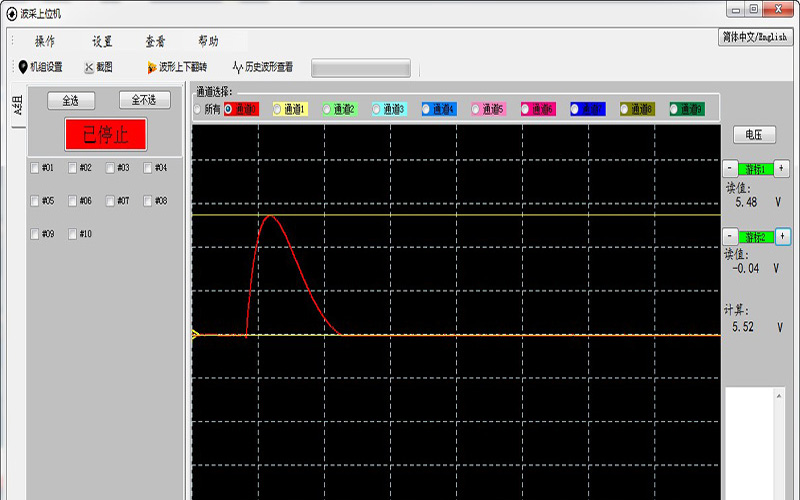
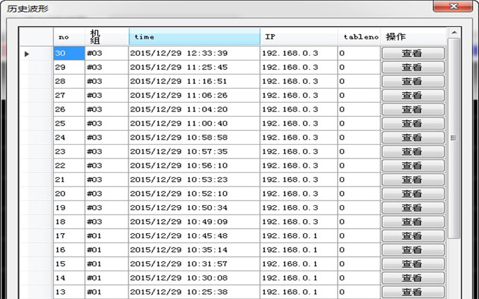
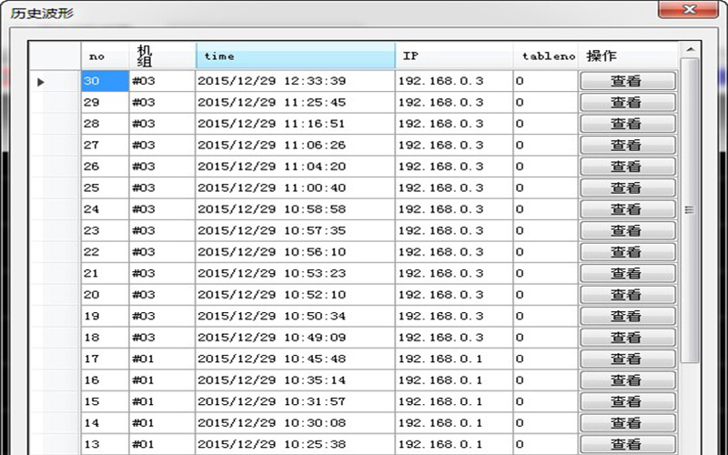

多路高速采样系统
-

多路高速采样硬件系统
-

采样系统上位机界面
- 
历史波形查看界面
- 
项目介绍
多通道高速采样，可用于记录路数众多的波形
- 系统简介
- 系统主要分为硬件采样系统和上位机显示
-
- 硬件采样系统：设备采用FPGA+ARM架构，FPGA主要控制多通道高速采样，ARM负责以太网通信。
每个设备具有10个采样 通道，由同一个采样信号触发采样，采样时长为4ms（可调整）。每通道的采样精度为12位，最高采样速率可达3MHz。整个采样系统可以支持高达254个设备同时工作，通过网线、交换机组合成多设备采样系统，并连接到电脑上位机 - 上位机显示：上位机可以设置系统中设备的数量、编号，显示设备的连接情况。
设备每完成一次波形采样会将采样波形数据传送到上位机，上位机将数据存储在数据库中，任何时候都可进行历史波形查看。上位机可以显示设备的任一通道波形，也可以同时显示所有通道波形。还具有波形颜色设定、上下翻转、时间测量、幅值测量、截图等功能。所有的波形数据都可以通过数据库的操作进行备份、还原。系统还支持基于互联网的远程监测
- 硬件采样系统：设备采用FPGA+ARM架构，FPGA主要控制多通道高速采样，ARM负责以太网通信。
- 项目说明
- 该硬件采样系统和上位机编写都由自行设计，且投入过使用，一切工作正常